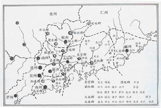

我的家乡——惠州

市境内上古时期已有人类，已发现多处新石器时代晚期人类生产、生活的遗迹和遗物。博罗葫芦岭、苏屋岗、何屋岗等贝丘遗址，出土石锛、石斧、石矛和敲砸器，以及大量饰有绳纹、方格纹、云雷纹、夔纹等纹饰的夹砂、泥质陶片。
先秦时期属百粤（越）范围。春秋战国时期，惠州一带的文化已有一定的发展水平，并与中原文化息息相关。在博罗散屋村出土过一组大小相近、形制、纹饰相似的7件青铜甬钟；博罗的苏屋岗遗址曾采集和出土了青铜斧、矮圈足陶豆以及一批以夔纹为特征的印纹陶器，在其附近还出土过两件战国青铜编钟。据史料记载，在今惠州市区及博罗北部一带，战国时期曾出现过一个名叫“缚娄”的小国，但不久即在诸侯兼并战争中消失。21世纪曾挖掘出规模较大的“缚娄遗址” 。
秦始皇三十三年（前214年）在今博罗“缚娄”族居地置傅罗县后，今市境为南海郡傅罗县（吴末甘露元年改傅罗为博罗，另割置欣乐县，此为归善县的前身）的一部分。
西汉前期近百年间，处于赵氏南越国治理之下。汉元鼎六年（前111年），汉武帝统一岭南，结束南越国统治。
隋开皇十年（590年），废梁化郡，设循州总管府，辖粤东的循、潮二州。总管府建于木山之阜，即今惠州市中山公园。隋炀帝即位后，将循州改为龙川郡。刘岩建立南汉之后，设祯州管辖归善、博罗、河源、海丰四县，州治所在惠州。北宋天禧五年（1021年），因避太子赵祯之讳，把州名改为惠州。
东晋析南海郡置东官郡，博罗县先后析置海丰、欣乐、安怀3县，博罗、欣乐两县隶南海郡，而安怀县隶东官郡。
南宋，安怀、欣乐两县隶东官郡，博罗县隶南海郡。至南齐，安怀县改名怀安县，博罗县析置罗阳县隶南海郡。至梁天监二年（503年），南海郡析置梁化郡，设郡治于梁化屯（在今惠东梁化）。怀安县并入欣乐县，罗阳县并入博罗县。博罗县与欣乐县同隶梁化郡。博罗县治迁至浮碇冈（今博罗县城）。这是今惠州境内首次设置的郡治。陈祯明二年（588年），欣乐县改名归善县。
隋开皇九年（589年），废梁化郡，在今市境置循州。隋大业三年（607年），循州改称龙川郡。唐武德五年（622年）复为循州。唐代曾易名雷乡郡、海丰郡。南汉乾亨元年（917年）改置祯州。
宋天禧四年（1020年）改称惠州。
元至元十六年（1279年）改为惠州路，明、清为惠州府。明弘治九年（1496年），设立龙门县，隶广州府。
1949年12月设东江专区，1950年1月撤销，惠阳县划属粤东行政区，博罗、龙门两县划属粤中行政区，至1956年1月这3县同隶新设立的惠阳专区。1958年4月，惠阳县析惠州镇置惠州市（县级）、析县东部置惠东县。同年11月龙门县并入增城县，隶属广州市。11月、12月先后撤销惠州市、惠东县，仍划归惠阳县。1959年3月惠阳专区撤销，惠阳、博罗两县划归佛山专区。1961年10月恢复龙门县，亦划归佛山专区。1963年7月恢复惠阳专区，惠阳、博罗、龙门3县划归惠阳专区。1964年10月惠阳县再析惠州镇设惠州市（县级），1965年7月恢复惠东县。1970年10月惠阳专区改称惠阳地区，辖区未变，惠阳、惠东、博罗、龙门4县及惠州市仍隶之。1975年3月龙门县划归广州市。
1988年1月7日，国务院批准撤销惠阳地区建制，分设惠州、东莞、汕尾、河源4个地级市。惠州市管辖惠城区、惠阳县、惠东县、博罗县、龙门县。1994年5月惠阳撤县改市（县级），由惠州市代管；至2003年3月又撤市设区，隶惠州市，6月10日挂牌。
1992年经国务院批准成立仲恺国家高新技术产业开发区。1993年5月，经国务院批准设立大亚湾经济技术开发区。1994年惠阳撤县设市（县级）。
2003年惠阳撤市设区。惠州辖惠城区、惠阳区、惠东县、博罗县、龙门县，设有大亚湾经济技术开发区和仲恺高新技术产业开发区两个国家级开发区。
2015年10月，国务院同意将惠州列为国家历史文化名城。

- 西湖，就像镶嵌在天堂里的一颗明珠。一山绿，一山青，像一幅优美的山水画
- 平静的湖面，犹如一面硕大的银镜。一群群白鸥掠过湖面，在阳光下一闪一闪